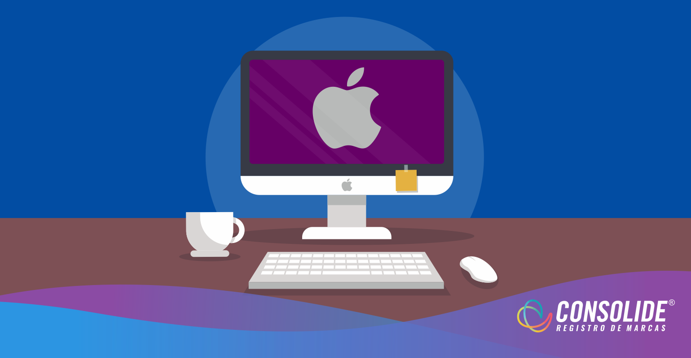
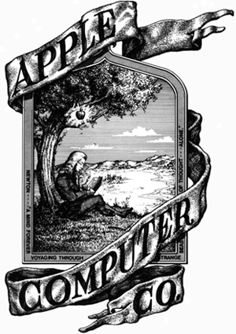

Considerada uma das marcas mais inovadoras do Vale do Silício, a Apple é famosa por parar o mundo cada vez que lança um produto novo.
É fato que a cada atualização seus produtos deixam as pessoas boquiabertas. Há quem diga que quando se passa a utilizar qualquer item da marca, não tem mais volta… É apaixonante e viciante.
Entre as principais criações da Apple estão os computadores Apple I, Macintosh, iMac e MacBook, o sistema operacional Mac OS X, o iTunes, iPod e iPhone.
Porém, o que faz dessa maçã uma febre mundial? Vamos conhecer um pouco mais da história da Apple neste artigo.
história da apple
Um trio de amigos reunido em uma garagem, mesmo sem saber, estava iniciando algo que revolucionaria a tecnologia.
Steve Jobs, Steve Wozniak e Ronald Wayne começaram a produzir computadores em miniatura e assim surgiu a Apple no dia primeiro de abril de 1976, em Cupertino, no Vale do Silício que existia na Califórnia.
O primeiro computador colocado no mercado foi o Apple I, feito por Wozniack. A empresa só decolou na verdade, em 1977, quando o Apple II foi apresentado em uma feira de informática.
Em 1980, quando lançaram o Apple II, a empresa começou a explorar o mercado internacional. Em sequência, nessa mesma década estavam passando por uma grande crise, quando Wozniack sofreu um acidente aéreo e Steve Jobs assumiu como CEO.
Nesse meio tempo, Steve saiu da empresa e voltou somente em 1996 quando a Apple estava à beira da falência. A partir daí começaram a ser lançados produtos e programas que revolucionaram a situação e criaram a oportunidade da marca ser a potência atual.
Ali criaram o iMac que chamou a atenção do público jovem, iPod que proporcionava levar músicas a todo lugar, iPhone um smartphone com super funcionalidades e entretenimento e o iPad com a era dos tablets fáceis de levar para onde quisesse. A empresa também lançou o iTunes, um player que armazenava, organizava e sincronizava músicas a outros aparelhos.
Com o passar do tempo novos produtos foram lançados e cada vez mais as pessoas aderiram a marca. A Apple é mundialmente conhecida e está em todos os cantos, mesmo depois da morte de Steve em 2011.
explorando a identidade visual da apple
O nome “Apple” e o símbolo foram escolhidos por três razões:
- O nome “Apple” e o símbolo foram escolhidos por três razões:
- Ter uma maçã ligada a computadores foi uma aposta inusitada porque ninguém associaria as duas coisas;
- Uma maçã está ligada a uma vida saudável.
Atualmente, para aproximar o consumidor, o “i” que fica a frente de alguns produtos da Apple, como iPod e iPhone, significa “I”, em inglês “eu”. Anteriormente, ele se referia a palavra “internet”
logotipo
O primeiro logotipo da Apple mostrava Isaac Newton embaixo de uma macieira. Ele foi desenhado por Ron Wayne, o terceiro fundador da empresa. Porém, foi usado por pouco tempo, pois seria mais complicado reproduzi-lo.
 (foto: divulgaçao)O novo desenho do logotipo foi feito por Rob Janoff, em 1976. Primeiramente seu estilo era uma maçã com uma mordida nas cores do arco-íris. Só em 1998 ele se tornou monocromático e preta.
Sobre o desenho da maçã existem algumas especulações como:
- Acreditam estar relacionado à marca com a história bíblica de Adão e Eva (a maçã é o fruto da árvore da sabedoria);
- Acreditam estar relacionado à marca com a história bíblica de Adão e Eva (a maçã é o fruto da árvore da sabedoria);
- Associação da maçã com conhecimento e a famosa mordida, que significaria a aquisição do conhecimento;
- Como um trocadilho: mordida, em inglês, é bite, que obviamente lembra byte.